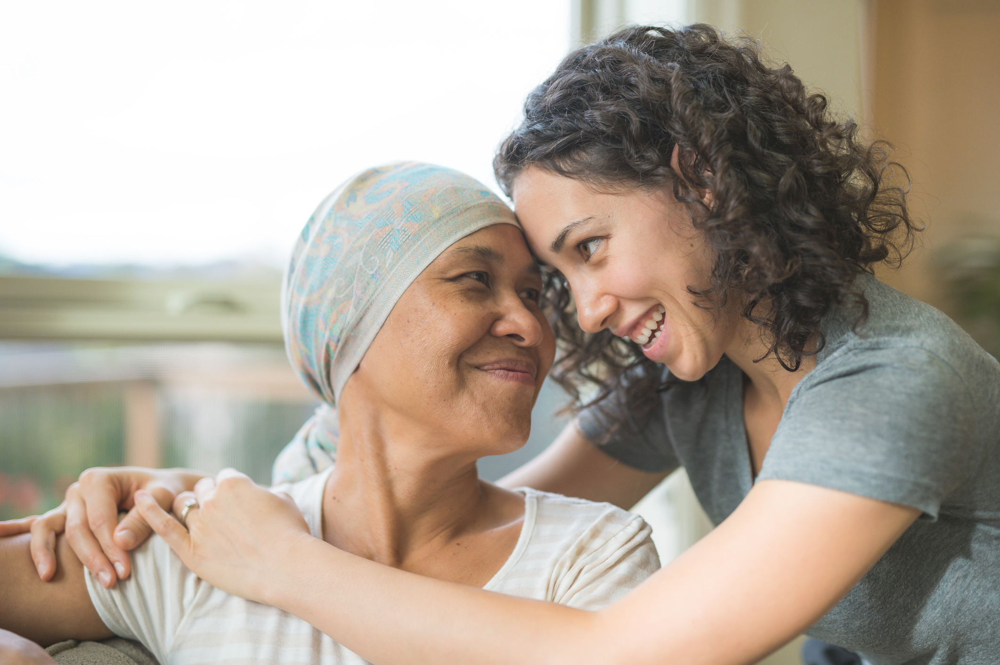

NOTICIAS

Becas de Estudio
El objetivo de este proyecto es beneficiar a jóvenes recuperados de cáncer con becas académicas, para lograr la continuidad de estudios pendientes y obtener una profesión futura y reinserción en la sociedad.Las becas podrán atender a los jóvenes con estudios universitarios, técnicos profesionales o de centros de formación técnica. Así también podrán tener alcances parciales y en ocasiones especiales, totales.
El año 2018 se otorgaron un total de 28 becas de las cuales 15 corresponden alumnos antiguos y 13 son para alumnos que inician sus estudios superiores este año 2018.
Para que estas becas sean bien utilizadas, sean objetivas y sean supervisadas, elaboramos requisitos básicos y similares a los utilizados en el resto de las instituciones que entregan estos beneficios.

Voluntariado
Está a cargo de la Presidenta Sra. Soledad Morales.Este voluntariado trabaja en el Hospital Luis Calvo Mackenna. Su objetivo es acoger a los padres e hijos, brindándoles apoyo y acompañamiento. Las voluntarias informan a los padres cual es la misión que cumplen con los niños del hospital además de difundir los beneficios entregados a todos los niños por la Fundación Niño y Cáncer, tales como: Cena de navidad, Taller de Ski para niños amputados, Encuentro con la Montaña para niños en seguimiento, Campeonato de Futbolito y Porristas.
Desarrollan labores en el Policlínico de Oncología del Hospital Regional de Concepción. Tiene a cargo la administración de los tres Departamentos de Acogida de la Fundación. Mantienen los departamentos con su mobiliario completo y en buenas condiciones. Además orientan a la familia beneficiadas del uso de estos.
En materia de eventos, proyectos y actividades se cuenta con la participación de la totalidad del voluntariado.
Aprendiendo a revivir
En el año 2009, comenzamos a realizar reuniones trimestrales con los padres cuyos hijos habían fallecido a causa del cáncer infantil; al principio fue muy dificil, no sabíamos muy bien que ibamos a hacer, ni como lo ibamos a llevar a cabo. Al mes de noviembre del 2014, hemos realizado 18 encuentros, donde en un principio solo participaban las madres.
Hoy son familias, las que participan de cada encuentro, el grupo decidió llamarse "Aprendiendo a revivir", cada reunión a sido un éxito, porque cada miembro de la familia, a encontrado su espacio, donde poder hablar y expresar cada una de sus emociones, sin temor a ser juzgado, donde encuentran un lugar y un tiempo de dedicación exclusiva para conversar con otra madre, otro padre, otro abuelo(a) que vivio la misma experiencia que ella o él, donde pueden conversar con otra persona que "Sí les entiende", que "Sí tiene derecho a decirle: Yo sí te entiendo, porque a mí también se me murio un hijo"
Solo tenemos palabras de agradecimiento para cada uno de ustedes, y para Fundación Niño y Cáncer, porque sin su ayuda, muchos padres habrían quedado sin la posibilidad de participar de estas reuniones,simplemente porque no cuentan con los medios económicos para trasladarse entre cuidades, hasta el lugar de la reunión.